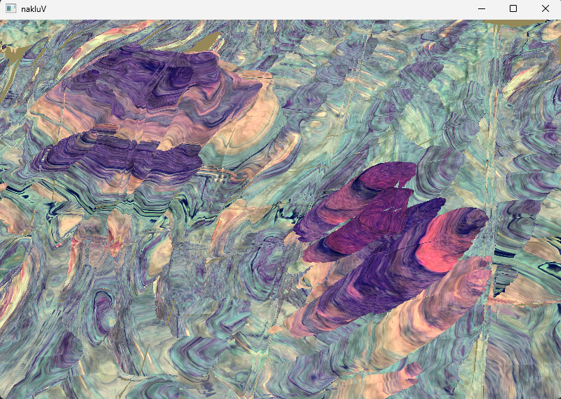
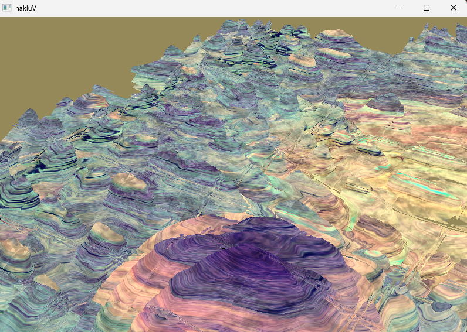
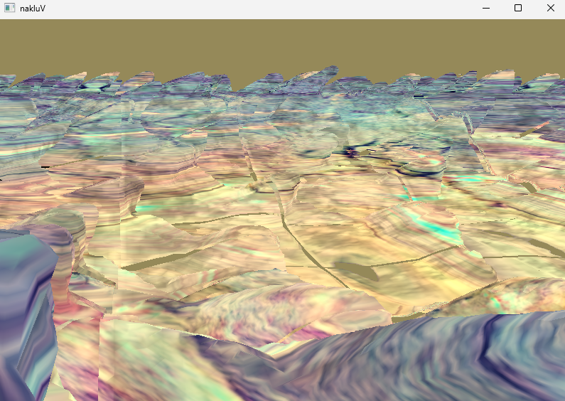
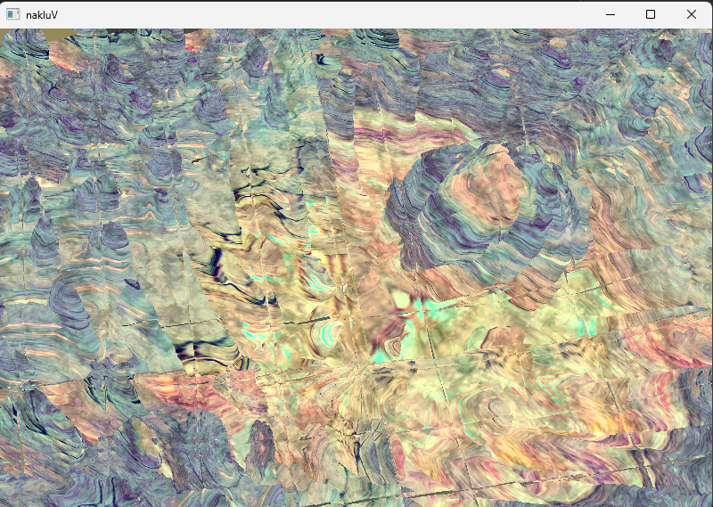

Summarize, in about one paragraph, your approach to the Final Project. How did you structure your code? What’s cool about it? Are there parts you weren’t able to complete?
The key function of the final project is
void Tutorial::run_terrain_generation(std::vector<BlockCoord> &blocks),
which utilizes two compute shaders to accomplish terrain generation. The
program allocates GPU memory and descriptor sets to store the resulting
vertices, indexed by their coordinates. A hash map is employed to handle
evicted blocks in cases of collisions. During the rendering stage, only
the blocks within the camera’s frustum are processed for rendering.
The remarkable feature of the application is its ability to dynamically generate terrain over vast distances as the camera moves. However, one limitation of the design is that it allocates a fixed memory size of 2.88MB for each block, and with a block pool size of 1024, this can lead to inefficient GPU memory usage.
My Scene
Describe the scene you made, and include a screen recording showing it
running in real-time:
This scene is composed of sine waves, square waves, Perlin noise, and a ball density function.


For the video demonstration, click the link below:
Loading PTERRAIN objects
Cover, at least: how data moves from "PTERRAIN"s stored in an s72 file
to the in-memory representation used by your renderer.
// JSON-based format object:
{
"type":"PTERRAIN",
"name":"terrain",
"length":32,
"depth":32,
"octaves":6,
"persistence":2,
"scale":1,
"heightLimit":3,
"blockSize":1,
"material":"lambertian:terrain"
}"length": 3D texture length and width.
"depth": 3D texture depth.
"octaves", "persistence",
"scale": Control parameters for the Perlin noise
function.
"heightLimit": Maximum height of the model in world
coordinates.
"blockSize": Size of each 3D texture block.
"material": Terrain control material.
// global variable
PTerrainObject terrain;
std::unordered_map<int, BlockCoord> index_terrain_map; //index-block
std::unordered_map<long long, bool> terrain_empty_block_map; // save empty block hashGenerating Terrain
| Function | Description |
|---|---|
update() |
Sets 27 blocks in a 3×3×3 grid around the
center view direction in the z = 0 plane as target blocks and
updates the index_terrain_map. |
render() |
Iterates over all blocks in
index_terrain_map. Performs view frustum culling, sorts the
blocks by their distance to the camera, and executes
vkCmdDraw for each block. |
Generating the Polygons Within a Block of Terrain
First, we use the VUlkan’s compute shader (CS) to evaluate the complex density function at every cell corner within the block and store the results in a large 3D texture.
Next, we visit each voxel and generate actual polygons within it, if
necessary. The polygons are streamed out to a vertex buffer, where they
can be kept and repeatedly rendered to the screen until they are no
longer visible.
Making an Interesting Density Function
I use sine, square and other density functions to introduce fluctuations. However, certain combinations of control parameters can cause disruptions in the density function, leading to missing parts in the final output mesh.


Generating the Polygons
For each small block, the compute shader generates and streams out up to 15 vertices (5 triangles) per voxel.
void emitTriangles(int caseIndex, ivec3 voxelCoord,
float densities[8], vec3 normals[8]) {
// Lookup the triangle configuration based on caseIndex
int[15] triangleIndices = TRI_TABLE[caseIndex];
float zMin, zMax;
zMin = 0, zMax = 3;
for (int i = 0; i < 15; i += 3) {
// Stop when no more triangles
if (triangleIndices[i] == -1) break;
// Interpolate positions and normals
vec3 v0 = interpolateVertex(voxelCoord, densities, triangleIndices[i]);
vec3 n0 = interpolateNormal(normals, triangleIndices[i]);
vec3 v1 = interpolateVertex(voxelCoord, densities, triangleIndices[i + 1]);
vec3 n1 = interpolateNormal(normals, triangleIndices[i + 1]);
vec3 v2 = interpolateVertex(voxelCoord, densities, triangleIndices[i + 2]);
vec3 n2 = interpolateNormal(normals, triangleIndices[i + 2]);
// Generate UVs for each vertex based on cylindrical mapping
...
// Atomically allocate space for 3 vertices
uint baseIndex = atomicAdd(vertexCount, 3);
// Write positions and normals to the buffer
vertices[baseIndex + 0].pos = v0/32;
vertices[baseIndex + 0].normal = n0;
vertices[baseIndex + 0].texCoord = uv0;
vertices[baseIndex + 1].pos = v1/32;
vertices[baseIndex + 1].normal = n1;
vertices[baseIndex + 1].texCoord = uv1;
vertices[baseIndex + 2].pos = v2/32;
vertices[baseIndex + 2].normal = n2;
vertices[baseIndex + 2].texCoord = uv2;
}
}Performance
Compare the performance impact of terrain block sizes in a demo terrain. Larger blocks mean less CPU work, but take longer to render and might result in more GPU work
| Texture Size and Blocks | CPU Run Time (µs) | GPU Run Time (µs) |
|---|---|---|
| 32 × 32 × 32 (9 × 9 blocks) | 160.762 | 10778.140 |
| 64 × 64 × 64 (4 × 5 blocks) | 39.433 | 12133.002 |
| 96 × 96 × 96 (3 × 3 blocks) | 21.316 | 13167.654 |
The CPU part primarily involves recording and sorting the distances to the camera, which is an O(nlog n) operation. As the texture size increases, the pool size decreases, reducing the computational load.
The GPU part measures the block generation time. Since the local workgroup size is fixed at 4 × 4 × 4, larger texture sizes result in more workgroups being created, which in turn increases the overhead associated with managing these additional workgroups.
Sample Scene
.\bin\viewer.exe --scene lights-Spot-Shadows.s72Controls
Number key 1 S̄witch between scene cameras.
Number key 2 Switch to the user camera.
– Keys W/A/S/D Move the camera in user camera mode.
– Keys E/Left Ctrl Move the camera up/down in user camera mode.
– Mouse button Rotate the camera view in user camera mode.
Number key 3 Switch to the debug/culling camera.
Spacebar Play/Pause the animation.